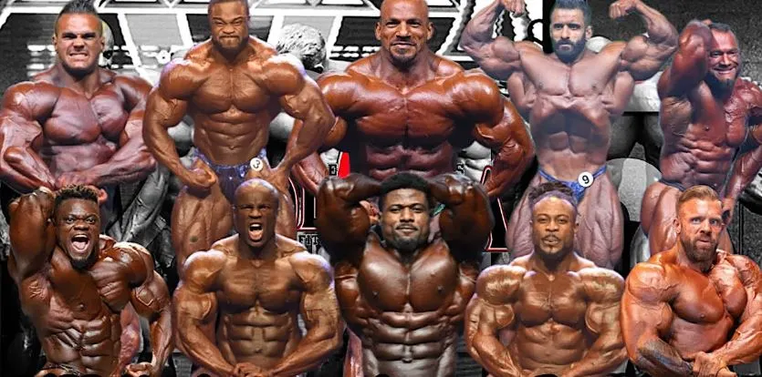
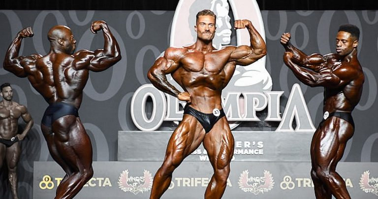
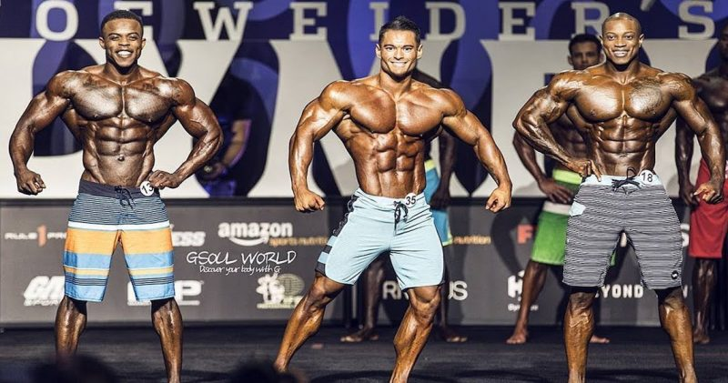

El culturismo masculino en la categoría "Open" es una de las divisiones más destacadas y desafiantes dentro del mundo del fisicoculturismo. Esta categoría está abierta a competidores de cualquier tamaño y desarrollo muscular, sin restricciones en términos de límites de peso o masa muscular.
En las competencias de culturismo masculino "Open", los fisicoculturistas se enfrentan en el escenario exhibiendo su físico trabajado y musculoso. Se evalúa la simetría, la proporción, la definición muscular, la separación y la condición general. Los competidores en esta categoría buscan lograr un aspecto impresionante y musculoso, combinando masa muscular y una apariencia estética.
Los culturistas masculinos en la categoría "Open" se dedican intensamente a su entrenamiento y acondicionamiento físico. Siguen rutinas de entrenamiento rigurosas, combinando ejercicios de resistencia y entrenamiento de fuerza para desarrollar y mantener su musculatura. Además, cuidan su alimentación, centrándose en una dieta equilibrada y rica en nutrientes para apoyar el crecimiento muscular y la recuperación.
Los culturistas masculinos en la categoría "Open" buscan lograr un equilibrio entre tamaño muscular y estética. Se esfuerzan por desarrollar músculos grandes y definidos, al tiempo que mantienen una apariencia estética y armoniosa en su físico. Esto implica trabajar en todos los grupos musculares principales, prestando atención a la simetría y la proporción entre los diferentes músculos.
El culturismo masculino en la categoría "Open" es una fuente de inspiración para muchos entusiastas del fitness y amantes del culturismo. Los culturistas que compiten en esta categoría demuestran una dedicación y un esfuerzo excepcionales, lo que inspira a otros a trabajar duro y alcanzar sus propias metas de acondicionamiento físico.
El culturismo masculino en la categoría "Open" ha dejado un impacto significativo en el mundo del fisicoculturismo. Los competidores en esta categoría han elevado los estándares de tamaño, desarrollo muscular y estética, estableciendo nuevos referentes para futuras generaciones de culturistas masculinos.
La categoría "Classic Physique" en el fisicoculturismo se centra en resaltar una apariencia estética y simétrica del físico, inspirada en la época dorada del fisicoculturismo en las décadas de 1960 y 1970.
En la categoría Classic Physique, los competidores son juzgados según los siguientes criterios:
La categoría Classic Physique tiene ciertas reglas y restricciones específicas, que pueden incluir límites de tamaño y desarrollo muscular en comparación con otras categorías. Estas reglas pueden variar dependiendo de las organizaciones y las competencias específicas.
Algunos de los fisicoculturistas más destacados en la categoría Classic Physique incluyen a Arnold Schwarzenegger, Frank Zane y Chris Bumstead, entre otros.
La categoría Classic Physique ha ganado popularidad en los últimos años debido a su enfoque en la estética y la simetría, y ha permitido revivir el estilo y la apariencia del fisicoculturismo clásico.
La categoría Men's Physique es una división popular en el mundo del fisicoculturismo que se centra en la estética y la apariencia atlética de los competidores. A diferencia de otras categorías de culturismo, en Men's Physique no se busca una excesiva masa muscular, sino un cuerpo proporcionado y estéticamente atractivo.
Los competidores en Men's Physique son juzgados principalmente por su apariencia física general, incluyendo su musculatura, simetría, definición muscular y tono. También se toma en cuenta el estilo y la presencia escénica, incluyendo la confianza y la habilidad para posar.
Una característica distintiva de Men's Physique es que los competidores usan ropa, como shorts cortos y sin camiseta, que muestra su físico sin revelar demasiado. La presentación se enfoca en poses y movimientos que resalten la apariencia atlética y estética del competidor.
Los competidores en Men's Physique trabajan para desarrollar una musculatura equilibrada y definida, sin llegar a extremos en cuanto a tamaño muscular. Esto implica una combinación de entrenamiento de resistencia, ejercicio cardiovascular y una dieta cuidadosamente controlada para mantener bajos niveles de grasa corporal y resaltar los músculos.
Men's Physique ha ganado popularidad debido a su enfoque en un físico alcanzable y realista para muchas personas interesadas en el fitness. Esta categoría atrae a competidores con diferentes niveles de experiencia y proporciona una plataforma para que aquellos que no buscan una extrema masa muscular puedan competir y mostrar su dedicación y esfuerzo en el gimnasio.
La categoría Men's Physique es una fuente de inspiración para aquellos que buscan un cuerpo atlético y estético. Los competidores en esta categoría demuestran que es posible lograr un físico envidiable sin tener que enfocarse en el tamaño y la masa muscular excesiva, y pueden inspirar a otros a seguir un estilo de vida saludable y comprometido con el fitness.
